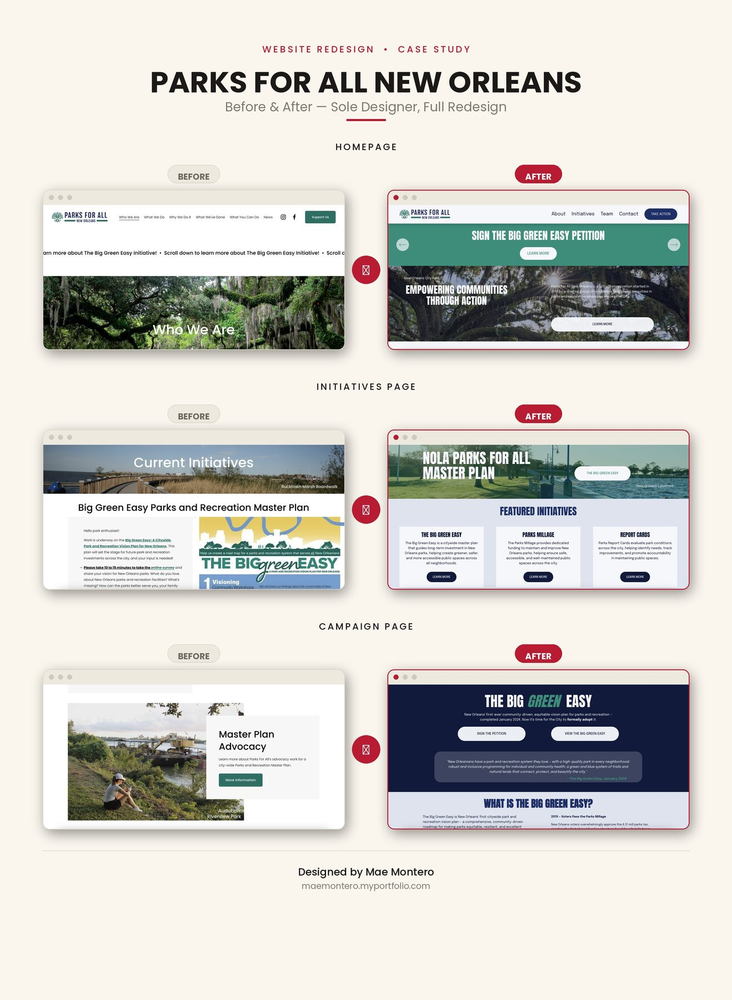

01 — Web & Social Campaign
Parks For All
A responsive nonprofit website designed to make New Orleans' park system feel welcoming, browsable, and easy to support.
01 The Challenge
NOLA Parks For All works to ensure every neighborhood in New Orleans has access to a safe, well-maintained park. Civic sites like this tend to read as dense and bureaucratic — the goal was to translate a mission about equity and access into a layout people would actually want to explore.
02 The Approach
I built the mockup around large photography, a simplified navigation, and a warmer palette pulled from the parks themselves, then mapped out a full before/after comparison to show stakeholders exactly what was changing and why.
03 The Result
A cleaner, more navigable site structure that puts the mission and the parks front and center, with a clear content hierarchy for programs, park listings, and donations.
